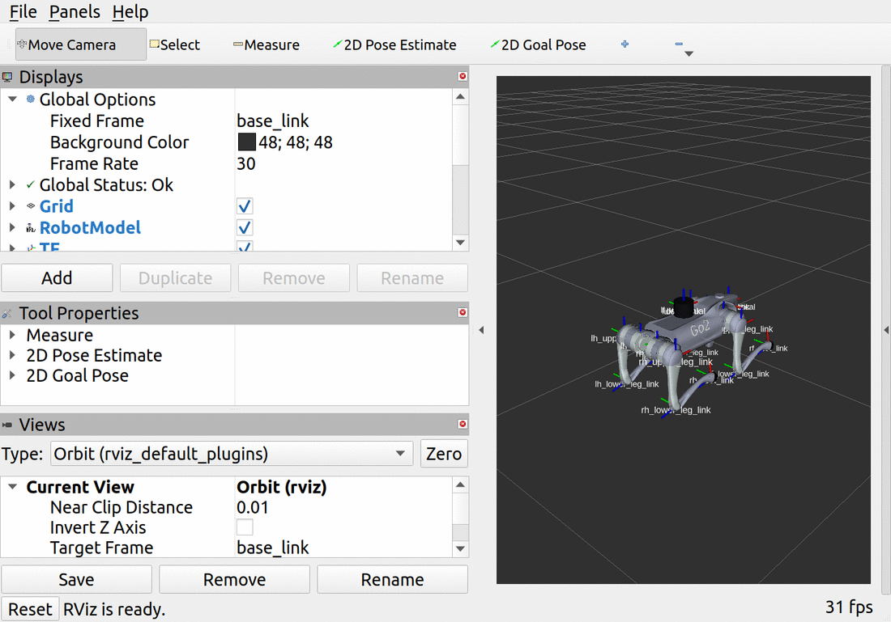
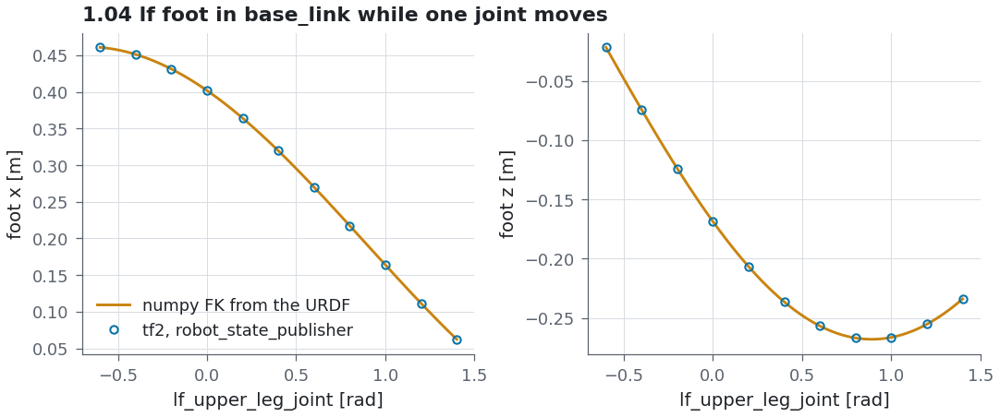
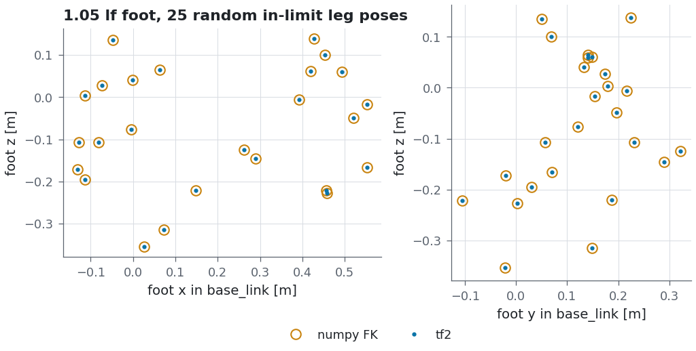
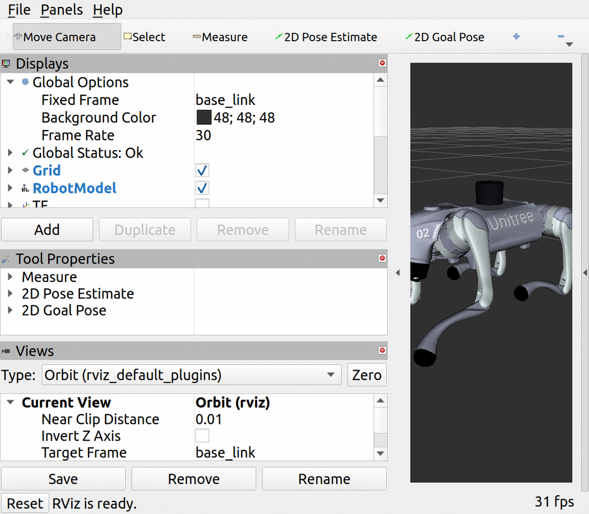
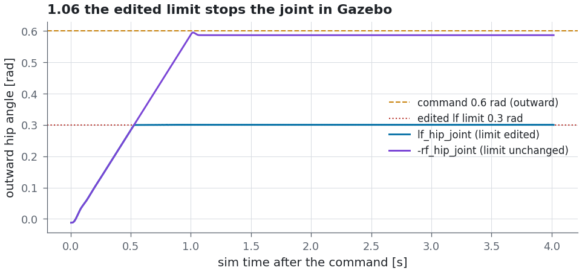
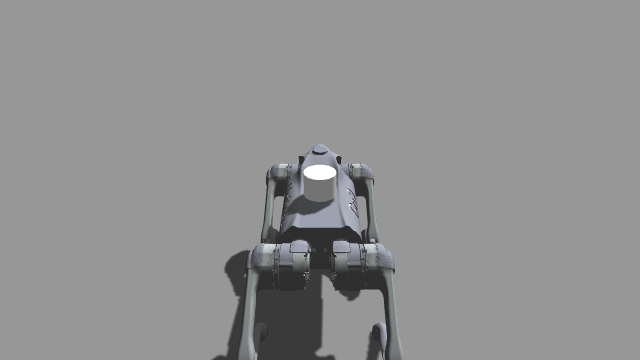
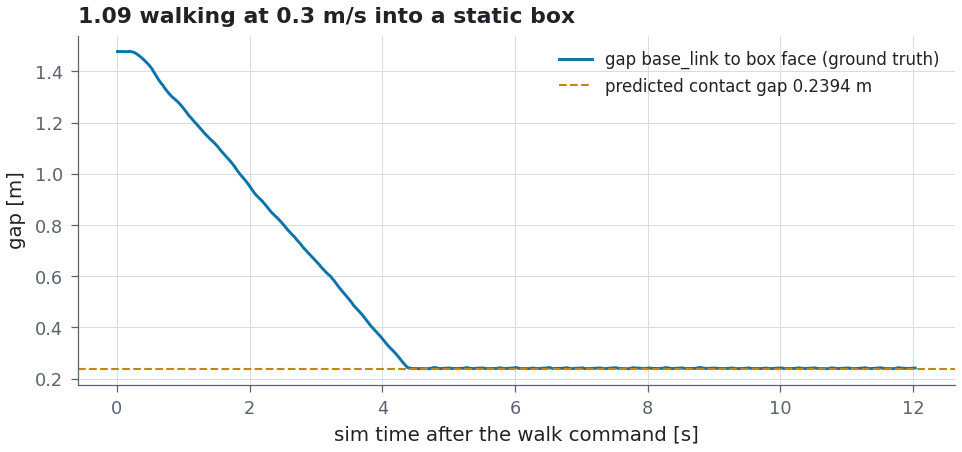
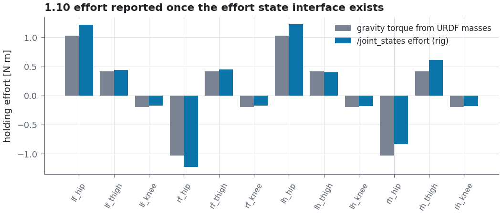

The robot · Stage 1 tasks
Import and inspect the robot
At the end of this stage you can load the Go2 description, see every link in RViz, name the 12 joints with their axes and
limits, check that the transforms RViz draws match forward kinematics, change a copy of the URDF (a joint limit, a sensor
frame), and put the robot into Gazebo on a floor with obstacles. Nine of the ten tasks pass. Task 1.10 fails: /joint_states
on the standard stack has no effort values.
Run everything from the repository root after source env.sh:
cd tasks/s01_import-and-inspect
/usr/bin/python3 run.py all # 2 min 29 s here, longer on a busy machine; or one task: /usr/bin/python3 run.py 1.04
/usr/bin/python3 -m pytest -q tests # 10 checks, no ROS needed
run.py starts what each task needs (robot_state_publisher, RViz, Gazebo), measures, stops it again and writes
results/<id>.json. Thresholds are in acceptance.json, written before the first run. Tasks 1.02 and 1.05 open an RViz window, so
they need a desktop session. Use /usr/bin/python3, the interpreter rclpy is built for.
| Task | Capability | Status | Key number | Where it lives |
|---|---|---|---|---|
| 1.01 | Import the Go2 model | verified | 24 links, 12 revolute joints, root base_link |
docs/06 Task 1 |
| 1.02 | Display in RViz | verified | 24 of 24 links resolved in tf2 | docs/06 Task 2, figures/1-02_rviz.png |
| 1.03 | The 12 actuated joints | verified | hips about x (4), thighs and knees about y (8) | results/1.03.json |
| 1.04 | Move one joint | verified | tf2 vs FK foot error 2.6e-16 m | figures/1-04_one_joint.png |
| 1.05 | Move the three joints of one leg | verified | 25 poses, max link error 2.8e-16 m | figures/1-05_leg_poses.png |
| 1.06 | Modify a joint limit | verified | edited joint stopped at 0.3008 rad of a 0.6 rad command | urdf/go2_rig.urdf, launch/rig.launch.py |
| 1.07 | Add a sensor link | verified | rear_cam_link at (-0.25, 0, 0.06), error 0 |
urdf/go2_extra.xacro, docs/06 Task 4 |
| 1.08 | Spawn in an empty world | verified | stands at 0.2154 m, tilt 0.008 rad | worlds/empty.world |
| 1.09 | Floor and obstacles | verified | stopped 0.2405 m from the box face, predicted 0.2394 m | worlds/obstacles.world, media/1-09_walk_into_box.mp4 |
| 1.10 | Read joint states | failed | 248.4 Hz, effort NaN on all 12 joints | results/1.10.json, figures/1-10_effort.png |
1.01 Import the Go2 model verified
Objective. Expand the xacro into a URDF and confirm that it parses.
Prerequisites. The workspace built as in chapter 3.
Theory. None. A URDF is a tree: one root link, and every other link has exactly one parent joint.
Implementation. No new code. The commands are the ones in docs/06 Task 1.3; run.py runs them and counts links and joints with urdf_fk.Urdf.
Execution.
xacro src/go2_nav_sim/urdf/go2_nav.xacro | check_urdf /dev/stdin | head -n 3
/usr/bin/python3 tasks/s01_import-and-inspect/run.py 1.01
Demonstration.
robot name is: go2
---------- Successfully Parsed XML ---------------
root Link: base_link has 4 child(ren)
Measurement. 24 links, 12 revolute joints, 11 fixed joints, root base_link.
Acceptance. Parsed, root base_link, 24 links, 12 revolute joints. Verified.
Failure analysis. Nothing failed. If xacro reports package not found: go2_description, env.sh was not sourced.
Next task. 1.02 draws the same 24 links.
1.02 Display the model in RViz verified
Objective. See every link of the URDF in RViz with the course's shared config.
Prerequisites. 1.01.
Theory. RViz draws a link only if tf2 can chain transforms from the fixed frame to it. robot_state_publisher publishes
the fixed joints once on /tf_static and the moving joints on /tf each time /joint_states arrives.
Implementation. No new code: docs/06 Task 2.1 starts
robot_state_publisher, a joint state publisher and RViz with src/go2_nav_sim/rviz/go2.rviz. run.py uses the
non-GUI joint_state_publisher, looks up base_link to every link with tf2 and captures the RViz window with ImageMagick import.
Execution. The three commands from docs/06 Task 2.1, then
/usr/bin/python3 tasks/s01_import-and-inspect/run.py 1.02
Demonstration.

Measurement. 24 of 24 links resolved in tf2. RViz ran for 12.2 s without exiting, and the screenshot's grey-level standard deviation is 93.3, so the window was not blank.
Acceptance. 24 links resolved, RViz up for at least 10 s, pixel standard deviation at least 5. Verified.
Failure analysis. The map, scan, costmap and plan displays in go2.rviz show warnings here because nothing publishes those
topics yet; that is expected. One run failed with RViz up for 9.9 s: the test read the clock right after the screenshot, so a
window that opened quickly was observed for less than 10 s. run.py now keeps watching RViz until 12 s after the start and
records how long it stayed up.
Next task. 1.03 reads the joints that connect these links.
1.03 Identify the 12 actuated joints verified
Objective. List the actuated joints with name, axis and limits, read from the URDF and not from memory.
Prerequisites. 1.01.
Theory. A revolute joint turns its child about a unit axis $\hat a$ given in the joint frame. CHAMP's leg model expects the hip about $x$ and the thigh and knee about $y$ (docs/06 Task 5.4).
Implementation. urdf_fk.Urdf parses the expanded URDF. run.py 1.03 compares the actuated joints with the first three
names per leg in go2_config/config/joints/joints.yaml.
Execution. /usr/bin/python3 tasks/s01_import-and-inspect/run.py 1.03
Demonstration. Read from results/1.03.json. The left legs have the same limits as the right.
| Joint (each leg: lf, rf, lh, rh) | Axis | Lower [rad] | Upper [rad] | Effort [N m] | Velocity [rad/s] |
|---|---|---|---|---|---|
<leg>_hip_joint |
x | -1.0472 | 1.0472 | 23.7 | 30.1 |
<leg>_upper_leg_joint |
y | -1.5708 | 3.4907 | 23.7 | 30.1 |
<leg>_lower_leg_joint |
y | -2.7227 | -0.83776 | 35.55 | 20.06 |
docs/img/c06-go2-joints.png shows where each joint sits on the robot.

Measurement. 12 actuated joints; 4 hip axes are $x$ and 8 thigh and knee axes are $y$; 12 of 12 have lower < upper and positive effort and velocity limits; the set of names equals CHAMP's joint map.
Acceptance. All six checks in acceptance.json. Verified.
Failure analysis. Nothing failed. The knee range does not contain 0, so a joint state publisher starts the knee at -1.78023 rad, the middle of its range.
Next task. 1.04 moves one of these joints.
1.04 Move one joint and check the rotation verified
Objective. Rotate lf_upper_leg_joint and check that the foot moves where forward kinematics says, in the right direction.
Prerequisites. 1.02, 1.03.
Theory. The pose of a link is the product along its chain of the fixed joint origin and the joint rotation:
$$T_{\text{base}\to\text{foot}}=\prod_k T(\text{xyz}_k,\text{rpy}_k)\,R(\hat a_k,q_k),\qquad R(\hat a,q)=I+\sin q\,K+(1-\cos q)\,K^2,$$
where $K$ is the cross-product matrix of $\hat a$. For a point $p$ below a $+y$ axis ($p_z<0$), $\dot p=\omega\times p$ gives $\dot p_x=\dot q\,p_z<0$: a positive thigh angle swings the foot backwards.
Implementation. urdf_fk.py (numpy) implements the product above. run.py 1.04 publishes /joint_states itself, with
the thigh at 11 angles from -0.6 to 1.4 rad and the other joints at the slider defaults, and reads base_link to lf_foot_link
from tf2 at the stamp of each message. With the slider window from docs/06 Task 2.3 you do the same by hand.
Execution. /usr/bin/python3 tasks/s01_import-and-inspect/run.py 1.04
Demonstration.

Measurement. Largest foot position difference 2.6e-16 m; largest rotation difference of the joint 2.1e-8 rad (the
precision of arccos near 1). Foot x in tf2 falls monotonically from 0.4606 m at -0.6 rad to 0.0626 m at 1.4 rad.
Acceptance. Foot error ≤ 1e-6 m, rotation error ≤ 1e-6 rad, foot moves backwards for a positive angle. Verified.
Failure analysis. A /joint_states message that omits a joint leaves its frames out of /tf, and the lookup then fails
with an extrapolation error rather than a wrong number. run.py always publishes all 12 joints.
Next task. 1.05 moves all three joints of the leg.
1.05 Move the three joints of one leg verified
Objective. Move hip, thigh and knee together and check every link of the leg.
Prerequisites. 1.04.
Theory. The same product as in 1.04 with three non-zero angles.
Implementation. run.py 1.05 draws 25 configurations uniformly inside the limits (seed 1), publishes each and compares
lf_hip_link, lf_upper_leg_link, lf_lower_leg_link and lf_foot_link with forward kinematics. It then holds hip 0.6, thigh -0.4,
knee -0.9 rad and captures RViz with params/leg_view.rviz (a copy of go2.rviz with the TF display off and the camera on the
left front leg).
Execution. /usr/bin/python3 tasks/s01_import-and-inspect/run.py 1.05
Demonstration.


Measurement. Largest error over 25 poses and 4 links: 2.8e-16 m.
Acceptance. At least 25 poses, foot and link errors ≤ 1e-6 m. Verified.
Failure analysis. Nothing failed. RViz and tf2 accept any pose inside the limits, including ones with the foot above the hip (z > 0 in the side view); they do not check collisions. Gazebo does (1.09).
Next task. Stage 2 task 2.07 checks the same forward kinematics against a physics model.
1.06 Modify a joint limit in a copy of the URDF verified
Objective. Change one joint limit in a copy of the URDF and see the simulator enforce it.
Prerequisites. 1.03.
Theory. Gazebo turns the URDF <limit lower upper> into a joint stop. The trajectory controller does not clamp targets
to the limits, so a command past the limit is stopped by the physics alone.
Implementation. run.py (make_rig) expands upstream robot.xacro (no lidar or cameras), sets lf_hip_joint upper to
0.3 rad (was 1.0472), adds a world link fixed to base_link so the robot hangs in the air without CHAMP, and writes
urdf/go2_rig.urdf. launch/rig.launch.py starts gzserver with worlds/empty.world, spawns the copy and the two controllers.
The test commands both front hips 0.6 rad outward through /joint_group_effort_controller/joint_trajectory.
Execution.
/usr/bin/python3 tasks/s01_import-and-inspect/run.py 1.06 # writes the copy, starts the rig, measures, stops it
To look at the rig by hand instead, run only the launch line below, not together with run.py: both start a gzserver,
and two on one Gazebo master conflict.
ros2 launch tasks/s01_import-and-inspect/launch/rig.launch.py urdf:=$PWD/tasks/s01_import-and-inspect/urdf/go2_rig.urdf
Demonstration.

Measurement. check_urdf parses the copy and reads 0.3. Left hip maximum 0.3008 rad; right hip (limit unchanged) settled at
0.5868 rad.
Acceptance. Copy parses, limit 0.3, edited joint ≤ 0.32 rad, unedited joint ≥ 0.57 rad. Verified.
Failure analysis. The first rig run never activated the controllers: gazebo_ros2_control hands the URDF to ROS as a YAML
parameter (the same trap as in 1.07), and the colon-space in the copy's header comment made it fail with Couldn't parse parameter override rule. A URDF
loaded this way must not contain : anywhere. The right hip stops 13.2 mrad short of 0.6 rad. Holding the leg out at 0.587 rad needs 1.29 N m
against gravity (Urdf.holding_effort); at the controller's p = 100 N m/rad (ros_control.yaml) that is a 12.9 mrad error,
plus or minus 2 mrad for the 0.2 N m joint friction.
Next task. 1.10 uses the same rig to read joint effort.
1.07 Add a sensor link and check TF verified
Objective. Add a sensor frame to a copy of the description and confirm its transform.
Prerequisites. 1.02.
Theory. A fixed joint with origin $(t, \text{rpy})$ gives the child pose $T(t,\text{rpy})$ in the parent frame. A yaw of $\pi$ is the quaternion $(0,0,1,0)$.
Implementation. urdf/go2_extra.xacro is go2_nav.xacro plus the rear_cam_link and rear_cam_joint from
docs/06 Task 4. run.py 1.07 starts robot_state_publisher on it and
looks up base_link to rear_cam_link.
Execution.
/usr/bin/python3 tasks/s01_import-and-inspect/run.py 1.07
By hand, in two terminals:
ros2 run robot_state_publisher robot_state_publisher --ros-args \
-p robot_description:="$(xacro tasks/s01_import-and-inspect/urdf/go2_extra.xacro)"
ros2 run tf2_ros tf2_echo base_link rear_cam_link
Demonstration. tf2 returned translation (-0.25, 0.0, 0.06); docs/06 Task 4.3 shows the same frame in view_frames.
Measurement. 25 links in the copy, parent base_link, translation error 0 m, rotation error 0 rad.
Acceptance. 25 links, parent base_link, errors ≤ 1e-6. Verified.
Failure analysis. The first run failed at the lookup: robot_state_publisher, started with
-p robot_description:="$(xacro ...)" as in docs/06, aborted because ROS parses that value as YAML and the copy's comment contained
Task 1.07: a copy. The comment now reads Task 1.07, a copy, tests/test_stage_files.py fails if a : comes back, and
run.py passes the URDF in a parameter file, which is not affected. With the fix, the hand commands above print translation
(-0.250, 0.000, 0.060). The simulator still loads go2_nav.xacro; the copy changes nothing there.
Next task. Stage 6 reads the real sensor frames (lidar_link, camera_optical) the same way.
1.08 Spawn in an empty Gazebo world verified
Objective. Start the Go2 with CHAMP in a world that has only a floor, and check that it stands.
Prerequisites. 1.01; docs/06 Task 6.2 explains the start-up order.
Theory. CHAMP holds the feet nominal_height = 0.225 m below the hip axes (gait.yaml). The hip axes are at base_link
height and the foot point is the centre of a 0.02 m sphere, so the predicted base height is $0.225+0.02=0.245$ m.
Implementation. worlds/empty.world has the arena's sun, physics (ODE, 1 ms step) and ground friction, and nothing else.
sim.launch.py takes it through its world argument. odom:=gt publishes /odom_gt from the simulator.
Execution.
ros2 launch go2_nav_sim sim.launch.py world:=$PWD/tasks/s01_import-and-inspect/worlds/empty.world odom:=gt
/usr/bin/python3 tasks/s01_import-and-inspect/run.py 1.08 # starts and stops the simulator itself
Demonstration. The launch log has Successfully spawned entity [go2]. Chase camera after 8 s:

Measurement. Over 10 s of sim time after an 8 s settle: base height 0.2154 m (std 0.0005 m; 0.2153 m in the run before), largest roll or pitch 0.008 rad, horizontal drift 0.006 m. Both controllers active.
Acceptance. Spawned, 2 controllers active, height error ≤ 0.03 m, tilt ≤ 0.1 rad, height std ≤ 0.01 m. Verified, with 0.4 mm to spare on the height: the measured 0.2154 m is 29.6 mm under the prediction.
Failure analysis. The prediction assumes the joints reach CHAMP's targets. They do not quite: with p = 100 N m/rad the legs give a little under the robot's weight. That this explains all 29 mm was not measured here; stage 3 task 3.05 measures height tracking directly.
Next task. 1.09 adds obstacles to this world; stage 3 starts from this standing pose.
1.09 Floor and obstacles with collision geometry verified
Objective. Build a world with a floor and two obstacles, check their collision shapes, and see a collision stop the robot.
Prerequisites. 1.08.
Theory. The first collision shape to touch a wall straight ahead is the one furthest forward. In the URDF that is the hip
cylinder (radius 0.046 m, axis y) at $x=0.1934$ m, so the robot should stop with base_link
$0.1934+0.046=0.2394$ m from the face. The trunk box ends at 0.188 m, and the lidar and cameras have no collision shape.
Implementation. worlds/obstacles.world is empty.world plus a static box (0.4 × 1.2 × 0.5 m, front face 1.5 m ahead of the
spawn point) and a static cylinder (r 0.15 m, 0.6 m) off the path. run.py 1.09 reads each model's collision geometry back from
Gazebo with gz model -m <name> -i, records the chase camera, and sends /cmd_vel 0.3 m/s forward for 12 s.
Execution.
ros2 launch go2_nav_sim sim.launch.py world:=$PWD/tasks/s01_import-and-inspect/worlds/obstacles.world odom:=gt
gz model -m box -i | grep -A3 'box {'
/usr/bin/python3 tasks/s01_import-and-inspect/run.py 1.09
Demonstration. media/1-09_walk_into_box.mp4 (15 s, chase camera): the robot walks into the orange box and stays against it while the command lasts.

Measurement. Box and cylinder sizes from Gazebo equal the world file. Speed before contact 0.300 m/s. Gap over the last
2 s 0.2405 m against 0.2394 m predicted (0.2403 m in an earlier run). Box moved 0 m. Standing height before the walk 0.2161 m,
so base_height_error_m is 0.0289 m against the 0.03 m limit. The three runs on record gave 0.0289, 0.0291 and 0.0298 m.
Acceptance. Geometry matches, speed ≥ 0.15 m/s, gap error ≤ 0.05 m, box moved ≤ 1 mm, height error ≤ 0.03 m. Verified, with 0.2 to 1.1 mm to spare on the height over those three runs. This is the same 29-30 mm sag as in 1.08, so a run can fail on the height check alone; if it does, the cause is the leg stiffness described in 1.08, not the obstacle world.
Failure analysis. Pressed against the box, the trunk rolled or pitched by up to 0.079 rad and ended 0.061 m to the side of its start line. A box lower than the hips (0.2154 m) would meet the feet or the calves first and the prediction above would not hold.
Next task. Stage 6 task 6.13 stops before the same wall using the lidar instead of hitting it.
1.10 Read joint states failed
Objective. Read position, velocity and effort of the 12 joints from /joint_states and measure the rate.
Prerequisites. 1.08.
Theory. The rate is counted in sim time: $f=(N-1)/(t_N-t_1)$ over header stamps. The controller manager runs at 250 Hz
(ros_control.yaml). On the rig, a joint holding a pose against gravity must apply
$\tau_j=-\hat a_j\cdot\sum_i (c_i-p_j)\times m_i g$, summed over the links below joint $j$ (Urdf.holding_effort).
Implementation. run.py 1.10 records /joint_states for 5 s of sim time on the standard stack in the empty world. It then
starts the 1.06 rig, whose copy declares an effort state interface on every joint, holds a fixed pose and compares the reported
effort with the gravity torque from the URDF masses.
Execution.
ros2 topic echo --once /joint_states --field effort # with sim.launch.py running
/usr/bin/python3 tasks/s01_import-and-inspect/run.py 1.10
Demonstration.
From results/1.10.json, standard stack:
"effort_len": 12,
"effort_finite_fraction": 0.0,
"effort_sample": ["nan", "nan", "nan"]

Measurement. Standard stack: 1249 messages, 12 names, 248.4 Hz in sim time (194.3 Hz wall clock on a loaded machine; 247.8 Hz, 249.0 Hz and 245.7 Hz in earlier runs), position and velocity finite in every message, effort NaN in every message. Rig: effort finite in every message, largest difference from the gravity torque 0.199 N m.
Acceptance. 12 names, rate within 10 Hz of 250, position, velocity and effort finite. Failed: effort finite fraction 0.0.
Failure analysis. The upstream <ros2_control> blocks declare only position and velocity state interfaces, so the
joint state broadcaster fills effort with NaN. The rig shows the fix: one <state_interface name="effort"/> per joint makes the
values appear, and they match gravity to within the 0.2 N m joint friction set in the URDF. Applying it to the standard stack
means changing the upstream description through patches/upstream.patch, which this stage does not do.
Next task. Stage 2 uses position and velocity from /joint_states for tracking error; torque tasks (2.04) need the effort
interface above or a simulator that reports joint torque.